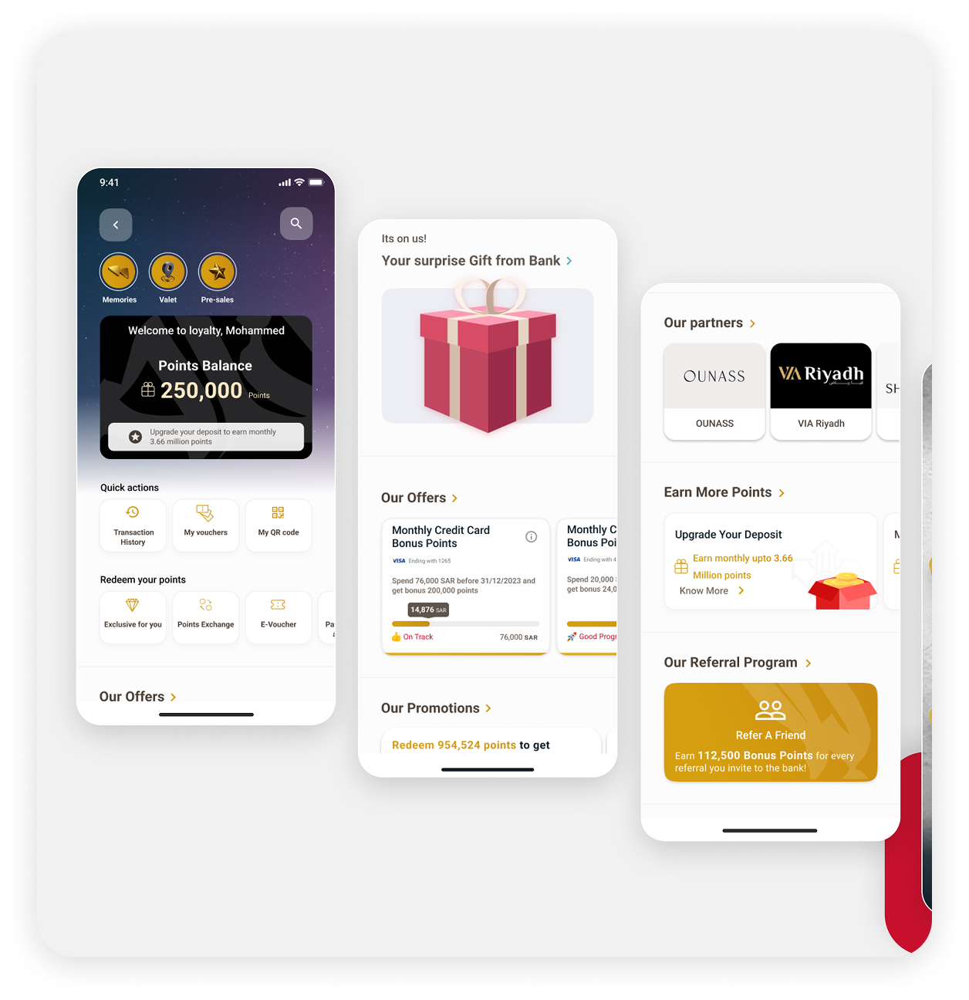
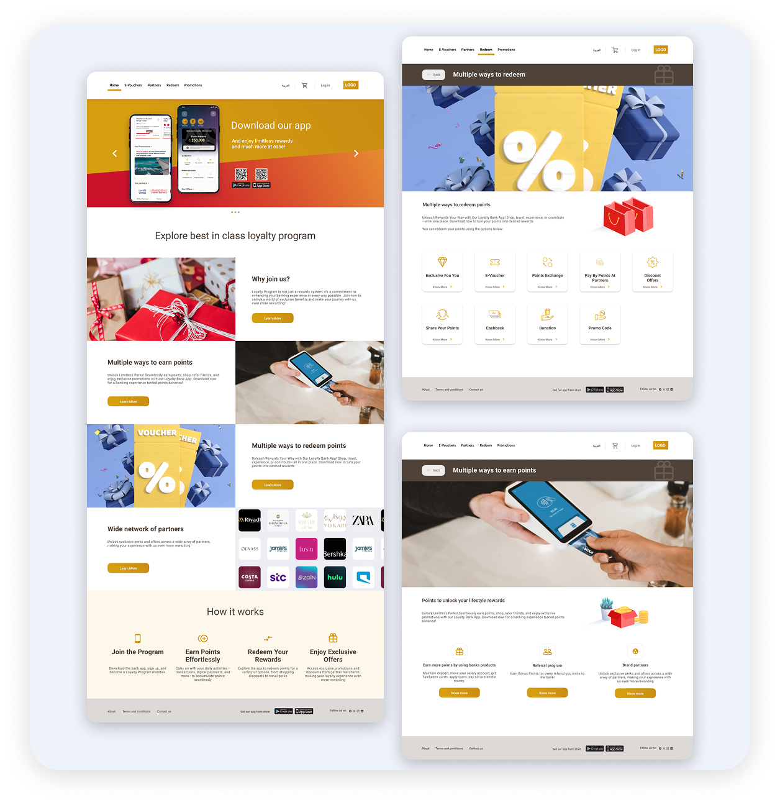
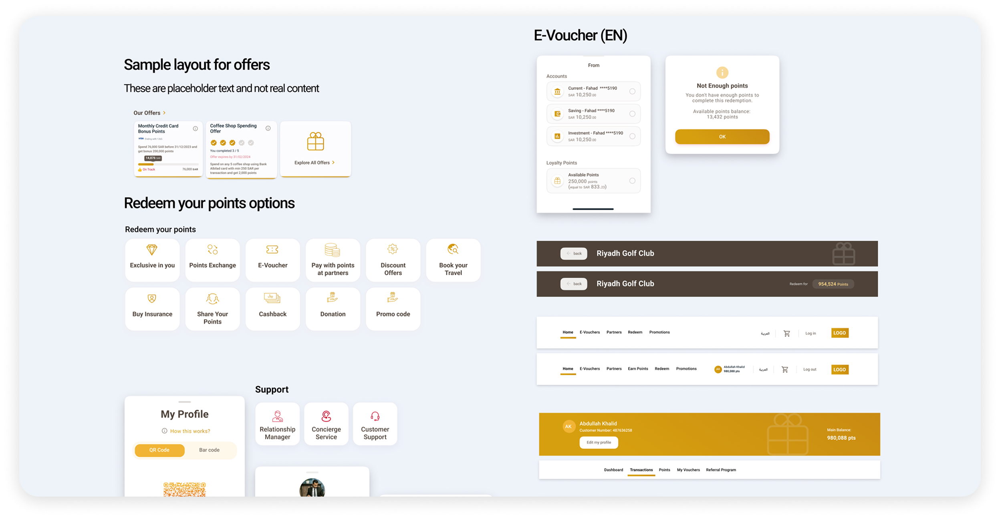
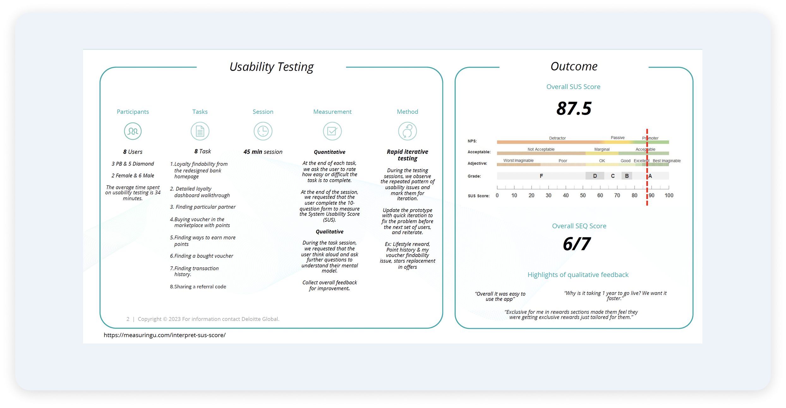

Transforming Customer Engagement Through
a Reward-Driven Banking Experience
Bank Albilad set out to strengthen customer engagement across its digital channels by introducing a Loyalty Program within its website and mobile app. At the time, loyalty features were either underutilized or unclear to users, resulting in low awareness, limited engagement, and a weak perception of value.
Customers often struggled to understand how rewards were earned, what benefits were available, and how they could redeem their points — making the program feel invisible despite its existence.
The project began with a strategic research phase focused on understanding customer motivations, expectations, and perceptions of value. Activities included benchmarking leading banking, fintech, and retail loyalty programs, customer segmentation analysis, persona creation based on income segments, user needs mapping, and stakeholder workshops.
The research revealed that different customer groups valued rewards differently — some prioritized simplicity, others were motivated by exclusivity or premium benefits. These insights shaped a loyalty experience relevant across multiple customer segments.
Phase 02I mapped end-to-end user journeys, defined the information architecture, and structured reward discovery and redemption flows. A primary focus was ensuring users could quickly answer three essential questions: How do I earn rewards? What benefits are available? How do I redeem my points?
The resulting experience positioned the Loyalty Program as a natural extension of the banking journey rather than a disconnected feature.
Phase 03I built a dedicated design system for the Loyalty Program ensuring consistency across web and mobile, supporting both Arabic and English interfaces. Despite a compressed two-month timeline, I used an agile approach with rapid iterations and continuous stakeholder alignment to maintain quality throughout.



Usability testing played a critical role throughout the project. Continuous testing sessions identified usability issues, validated design decisions, simplified complex interactions, and improved clarity across critical customer journeys. The results confirmed that the redesigned experience significantly exceeded usability benchmarks.

The redesigned Loyalty Program delivered measurable improvements in usability, engagement, and customer satisfaction. Following launch, it evolved from an overlooked feature into a key engagement driver within Bank Albilad's digital ecosystem.